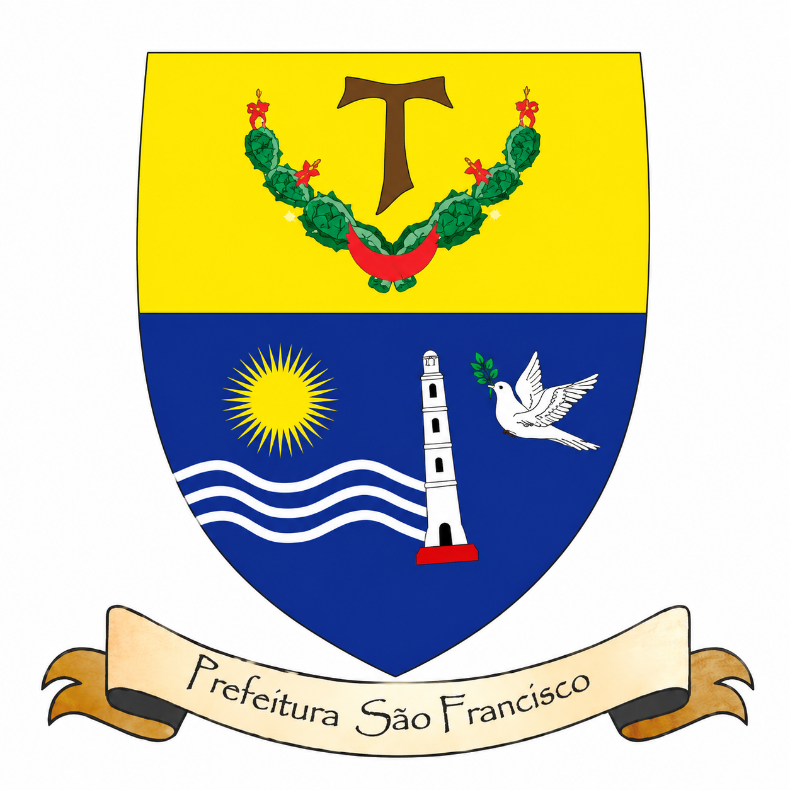
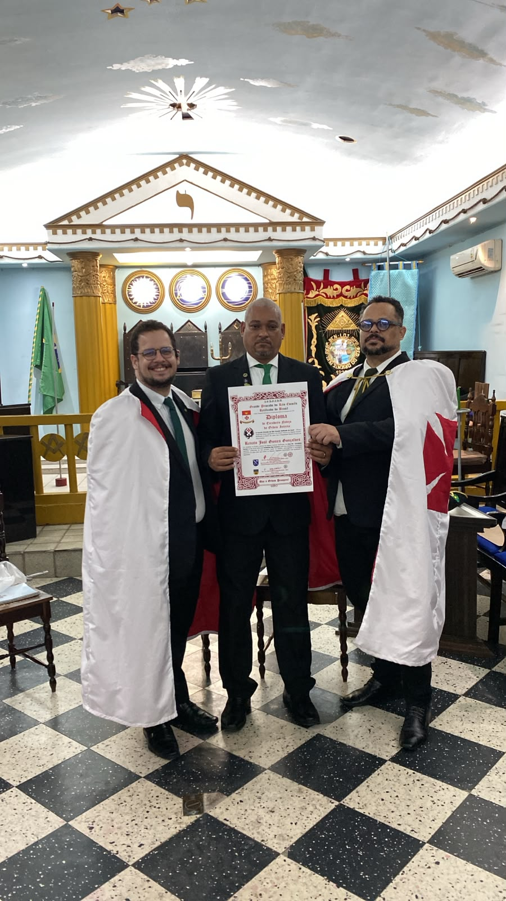

Prefitura do São Francisco
No Rito Escocês Retificado (RER), uma Prefeitura é o corpo administrativo e ritualístico máximo da Ordem Interior, responsável por governar os altos graus templários do rito (Escudeiro Noviço e Cavaleiro Benfeitor da Cidade Santa - C.B.C.S.). Essas unidades operam sob a autoridade do Grande Priorado.
A Prefeitura de São Francisco representa esse mesmo ideal em sua esfera de atuação, Sob sua inspiração, busca fortalecer a vivência dos valores do Rito Escocês Retificado, incentivando seus Cavaleiros a praticarem a beneficência, a retidão de caráter e o aperfeiçoamento interior, tornando-se verdadeiros instrumentos de concórdia, justiça e serviço à humanidade.


No dia 10 de julho de 2026, nosso estimado B.A.I. José Renato teve a honra de ser recebido no 5º Grau do Rito Escocês Retificado – Escudeiro Noviço, em uma cerimônia marcada pela fraternidade, pelo recolhimento e pela fidelidade aos princípios da Ordem.
A solenidade contou com a honrosa presença de nosso Prefeito, Geilson Nascimento, cuja participação abrilhantou este momento de grande significado na caminhada iniciática do novo Escudeiro Noviço, fortalecendo os laços de união, tradição e compromisso com os elevados ideais do Rito Escocês Retificado.